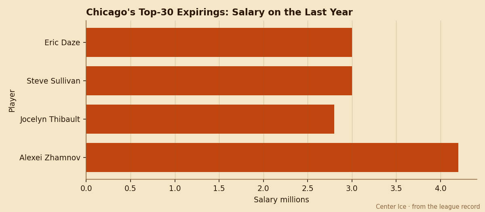

Payroll Dumps: Chicago Walks $13.00M From the League's 2nd Lowest Payroll
Four players at 85 or better carry 1 year left. All four sit at 96 morale. The draft is 22 days away and nobody in the room looks ready to take less.
 E.J. "Ears" CallahanInsider · The Hot Stove
E.J. "Ears" CallahanInsider · The Hot Stove

Which of the four does Chicago re-sign before the draft?

The  Chicago Blackhawks Hawks carry 4 of the league's top 30 expiring contracts. Combined salary on those four: $13.00M. Combined payroll for the club: $39.27M, which is the 2nd lowest in hockey. Walk all four and Chicago sits under $27M, the cheapest roster by a distance.
Chicago Blackhawks Hawks carry 4 of the league's top 30 expiring contracts. Combined salary on those four: $13.00M. Combined payroll for the club: $39.27M, which is the 2nd lowest in hockey. Walk all four and Chicago sits under $27M, the cheapest roster by a distance.
Keep all four and the Hawks jump past the $50M line, which puts them in the middle of the league for the first time in years.
None of the four look like men who want to take a hometown discount out of loyalty. They are already paid like bargains, and the Bureau's Morale Scale has all four at 96. They like the money there. Whether they like it enough to stay at the same number is a question for July.
The 4 names
 Jocelyn Thibault85 turns 30 in September. He started 70 games, carries a 90 overall, and costs $2.80M. A starter with that grade at that price is hard to find in the pool, and there is no pool. Chicago's goaltending depth beyond him is thin.
Jocelyn Thibault85 turns 30 in September. He started 70 games, carries a 90 overall, and costs $2.80M. A starter with that grade at that price is hard to find in the pool, and there is no pool. Chicago's goaltending depth beyond him is thin.
 Eric Daze83, 29, scored 127 points in 82 games on $3.00M. He is the most productive player on the roster and he is hitting the market the same July.
Eric Daze83, 29, scored 127 points in 82 games on $3.00M. He is the most productive player on the roster and he is hitting the market the same July.
 Alexei Zhamnov84, 34, put up 111 points in 82 games on $4.20M. He is the most expensive of the four and the oldest. A 34-year-old centre with 111 points on his last card gets a look from every club with cap space, and the Hawks are not one of them unless they move bodies first.
Alexei Zhamnov84, 34, put up 111 points in 82 games on $4.20M. He is the most expensive of the four and the oldest. A 34-year-old centre with 111 points on his last card gets a look from every club with cap space, and the Hawks are not one of them unless they move bodies first.
 Steve Sullivan80, 30, posted 100 points in 82 games on $3.00M. The same read applies: a 100-point winger on a 3-year-old bargain contract is a shopping-list item for a contender.
Steve Sullivan80, 30, posted 100 points in 82 games on $3.00M. The same read applies: a 100-point winger on a 3-year-old bargain contract is a shopping-list item for a contender.

What the desk is hearing
League sources say the Hawks' front office has not yet made a decision on which, if any, of the four it intends to retain. The club holds 5 picks, 1 first, and a $31.73M profit that gives it money to spend, but spending on four re-signings at market would blow the payroll past $55M.
The pattern this desk has been tracking says something else, though. Five of the last nine signings filed since March land on the injured list. Chicago is not currently catching them, but the Hawks were 25-36-14 and watching from home. A club rebuilding its offense has to add players somewhere, and the fastest way is free agency. Free agency closes July 28.
A man who would know says the Hawks will re-sign Thibault first. The reasoning is simple: he is the cheapest and the most replaceable from the open market is a goaltender who is not him. After that, the order depends on whether Zhamnov's agent starts the summer at 30 or 22 games a season in mind.
The draft is 22 days out. Chicago has the 5th-worst record in the league, which means a high pick, which means salary-cap relief on the rookie deal. If the Hawks can move one or two of the four to a contender before the draft, they get a body or a pick and they keep the payroll lean. If they wait for free agency, they get nothing back.